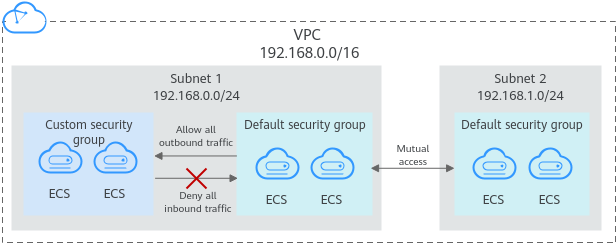
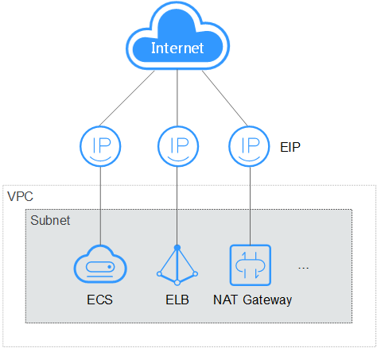

VPC
Virtual Private Cloud (VPC) allows you to create customized virtual networks in your logically isolated AZ. Such networks are dedicated zones that are logically isolated, providing secure network environments for your ECSs. You can define security groups, virtual private networks (VPNs), IP address segments, and bandwidth for a VPC. This facilitates internal network configuration and management and allows you to change your network in a secure and convenient network manner. You can also customize the ECS access rules within a security group and between security groups to improve ECS security.
For more information about VPC, see Virtual Private Cloud User Guide.
Subnet
A subnet is a range of IP addresses in your VPC and provides IP address management and DNS resolution functions for ECSs in it. The IP addresses of all ECSs in a subnet belong to the subnet.
By default, ECSs in all subnets of the same VPC can communicate with each other, while ECSs in different VPCs cannot.
Security Group
A security group is a collection of access control rules for ECSs that have the same security protection requirements and that are mutually trusted. By adding an ECS to a security group, you apply all the rules defined for this security group to this ECS.
Your account automatically comes with a default security group. The default security group allows all outbound data, denies all inbound data, and allows all data between ECSs in the group. Your ECSs in the security group can communicate with each other without the need to add rules.

Table 1 describes default security group rules.
Direction |
Protocol |
Port/Range |
Source/Destination |
Description |
|---|---|---|---|---|
Outbound |
All |
All |
Destination: 0.0.0.0/0 |
Allows all outbound traffic. |
Inbound |
All |
All |
Source: the current security group (for example, sg-xxxxx) |
Allows communications among ECSs within the security group and denies all inbound traffic (incoming data packets). |
EIP
The Elastic IP (EIP) service enables your cloud resources to communicate with the Internet using static public IP addresses and scalable bandwidths. EIPs can be bound to or unbound from ECSs, BMSs, virtual IP addresses, NAT gateways, or load balancers.
Each EIP can be used by only one cloud resource at a time.

Network QoS
Network QoS uses basic technologies to improve the quality of network communication. A network with QoS enabled offers predictable network performance and effectively allocates network bandwidth to use network resources.
To obtain the QoS data of an ECS flavor, including the maximum bandwidth, assured bandwidth, maximum PPS, and NIC multi-queue, see ECS Specifications.
- Assured intranet bandwidth: indicates the guaranteed bandwidth allocated to an ECS
- Maximum intranet bandwidth: indicates the maximum bandwidth that can be allocated to an ECS
- Maximum intranet PPS: indicates the maximum ECS capability in transmitting and receiving packets.
- NIC multi-queue: allocates NIC interrupt requests to multiple vCPUs for higher PPS performance and bandwidth.

- For instructions about how to test PPS, see How Can I Test Network Performance?
- For instructions about how to enable NIC multi-queue, see Enabling NIC Multi-Queue.
Use case of network QoS:
All ECSs of the same hypervisor share the network QoS. There is a hypervisor bucket within the host between the ECS and the hypervisor. So packets from ECSs pass through the bucket to the hypervisor. The bucket size (GB) is determined by the ECS flavor.
For example, if the maximum bandwidth of a hypervisor bucket is 10 Gbit/s and will be shared by ECS 1 and ECS 2, the assured bandwidth of ECS 1 is 5 Gbit/s and that of ECS 2 is 1 Gbit/s. ECS 1 and ECS 2 share the bandwidth of 10 Gbit/s.
- If the bandwidth required by ECS 1 is 10 Gbit/s and that required by ECS 2 is 0 Gbit/s, all bandwidths are allocated to ECS 1.
- If the bandwidth required by ECS 1 is 10 Gbit/s and that required by ECS 2 is 1 Gbit/s, the bandwidth allocated to ECS 1 is 9 Gbit/s and that allocated to ECS 2 is 1 Gbit/s.
- If the total bandwidth required by ECS 1 and ECS 2 exceeds the bandwidth of the hypervisor bucket, the assured bandwidth will be allocated to the ECSs first, that is the bandwidth for ECS 1 is 5 Gbit/s and that for ECS 2 is 1 Gbit/s. The remaining 4 Gbit/s of bandwidth will be randomly used by the two ECSs.
Network QoS:
- The maximum/assured bandwidth is completely independent of the EIP bandwidth.
- ECSs of the same hypervisor share the total bandwidth of the hypervisor.
- Network QoS applies for both internal and external bandwidth.
- Network QoS has been applied to the existing KVM-based ECSs.
- ECSs of the same hypervisor are preferentially allocated with assured bandwidths. Only when other ECSs of the same hypervisor are not in use, an ECS in use in the hypervisor can have the maximum bandwidth.
- Network QoS applies to any program running on an ECS.
- Network QoS applies for both internal and external bandwidth.
- The EIP bandwidth limits the external bandwidth, and the network QoS limits the internal bandwidth.